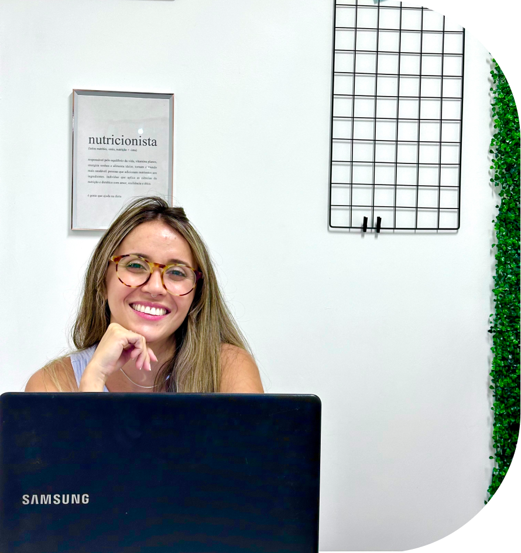

Prazer, Camila Lima,
sua última nutricionista!
Formada pela UNIRIO e apaixonada pela nutrição.
Meu objetivo é trazer ao paciente o maior conforto possível durante a reeducação alimentar.
Atualmente atendo os mais diversos casos, como:
-
Doenças Crônicas
Trato pessoas com quadro de diabetes, hipertensão, colesterol alto e mais.
-
Atletas
Trato pessoas com quadro de diabetes, hipertensão, colesterol alto e mais.
-
Reeducação
Trato pessoas com quadro de diabetes, hipertensão, colesterol alto e mais.
-
A partir de 8 anos
Trato pessoas com quadro de diabetes, hipertensão, colesterol alto e mais.